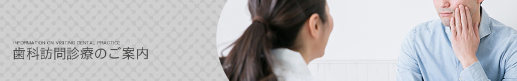
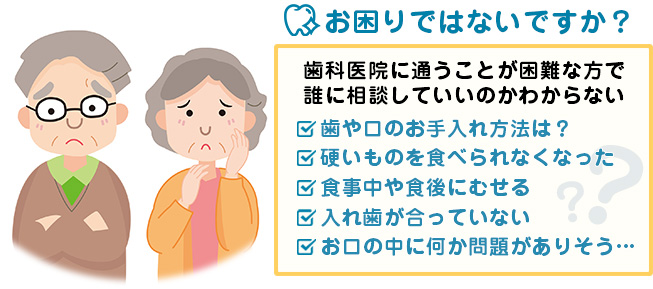
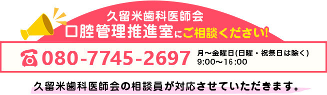
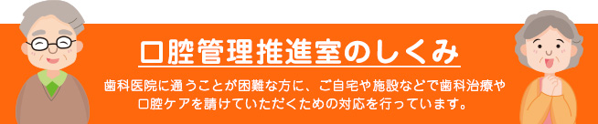
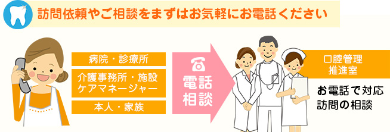
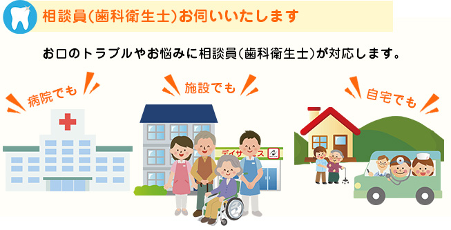
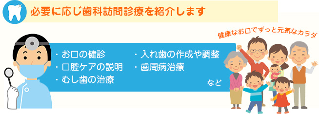
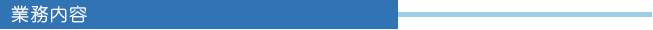
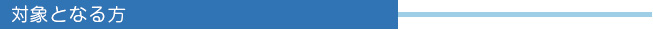
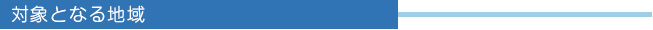

¥
「在宅・病院・施設などで、歯や口のことで困っているけど、歯医者さんへ行けない…」
そういった声が近年増えてきています。
口腔管理推進室にご連絡いただければ、相談員（歯科衛生士）が、みなさんのおられるお宅・施設・病院までお伺いします。


歯科訪問診療所のみ所在町一覧
| 安武町・大善寺町 | 3件 |
|---|---|
| 六ツ門・津福・長門石・小頭町・梅満町 | 6件 |
| 櫛原町・東町・通町・通外町・篠山町 | 9件 |
| 西町・諏訪野町・上津町 | 4件 |
| 御井町・国分町・野中町・合川町・篠原町 | 9件 |
| 宮の陣・小森野・北野町 | 10件 |
| 山川町・善道寺町・大橋町・御井籏崎 | 5件 |